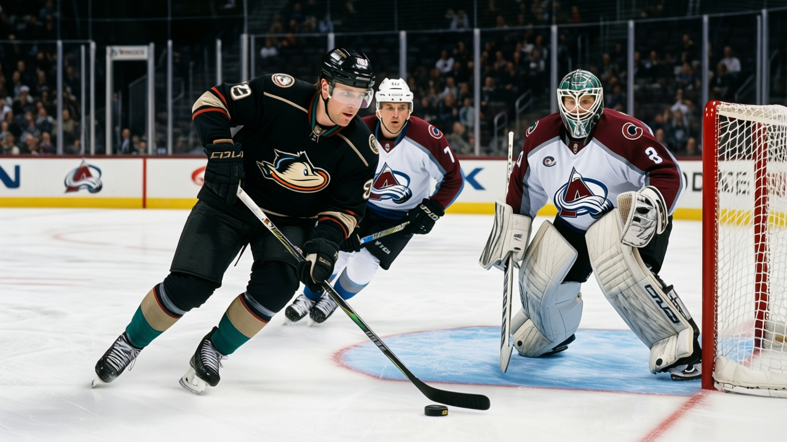

The 2004 First Round, Six Months On: Three Men the Book Has Already Written Off
Their potential figures sit below their current overall. The Bureau says there is nothing left to develop.
 Pete LarocqueScouting editor · The Prospect File
Pete LarocqueScouting editor · The Prospect File
Three players the 2004 draft landed in the first round now have potential figures below their current overall. Karel Duba70 went 3rd, plays for  Los Angeles Kings, and sits at 70 overall with a potential of 51. Tuomo Pihlman73 went 9th, plays for
Los Angeles Kings, and sits at 70 overall with a potential of 51. Tuomo Pihlman73 went 9th, plays for  Minnesota Wild, and sits at 73 overall with a potential of 56. Tuomas Lydman74 went 10th, plays for
Minnesota Wild, and sits at 73 overall with a potential of 56. Tuomas Lydman74 went 10th, plays for  Mighty Ducks of Anaheim, and sits at 74 overall with a potential of 52.
Mighty Ducks of Anaheim, and sits at 74 overall with a potential of 52.
The potential figure is the Bureau's read on remaining room. When it lands below the overall, he has already been graded higher than the Bureau believes he will ever go again. A player whose potential is 51 and whose overall is 70 is finished.
What the numbers say
| Player | Pick | Overall | Potential | Room |
|---|---|---|---|---|
| Karel Duba | 3 | 70 | 51 | -19 |
| Tuomas Lydman | 10 | 74 | 52 | -22 |
| Tuomo Pihlman | 9 | 73 | 56 | -17 |
| Pasi Salminen71 | 5 | 68 | 63 | -5 |
Duba has 27 games, 9 points and 9.1 minutes a night. Pihlman has 35 games, 18 points and 12.3 minutes. Lydman has 36 games, 16 points and 18.5 minutes. All three are up, all three are on a roster. None of them get better by the Bureau's count.
I have been doing this long enough to know that the first round of any draft produces men the Book closes the file on. The 2000 draft had four such names. The 2001 draft had two. What makes this class unusual is the gap size. Lydman's potential sits 22 points below his overall. That is not a rounding error in the development model.
The kids nobody signed
Yuri Semenov went 69th in the third round. He has no contract, no team, no games in this league. His potential figure is 78. That number is higher than 18 of the 28 first-rounders in this draft class.
Pekka Seikola went 40th in the second round. Unsigned. Potential 74. Above 18 of the 28 first-rounders as well.
Ronnie Dahlman, #34, unsigned, potential 71. Robert Gallstedt, #65, unsigned, potential 73. Four unsigned players in the top 70 picks have potential figures that beat the ceiling the Bureau has set for Pihlman, Lydman, Duba and Salminen combined.
The Bureau's potential figure is a likelihood, not a ceiling, and plenty of players with 78 potential never reach 60. But the pattern asks a question: three men drafted in the top 10 now have lower ceilings than unsigned players taken 30, 35, 65 and 69 picks later. The clubs made their call six months ago at the draft. The Book made its in the numbers.
What the rest of the class looks like
The top of the 2004 first round still has room by the Bureau's measure. Andreas Stahle63 at #18 has 96 potential against 63 overall, though he has not played. Mika Sulku69 at #4 has 92 potential against 65 overall in 28 games and 5 points. Roger Nylander73 at #12 has 94 against 71 in 6 games. These men still have development left in the model.
Half the first round still has a future in the numbers. The other half is a man with a 9-point season at 9.1 minutes and a file the Bureau is closing.
I keep a board. On mine, Semenov sits ahead of Pihlman. The Book agrees.